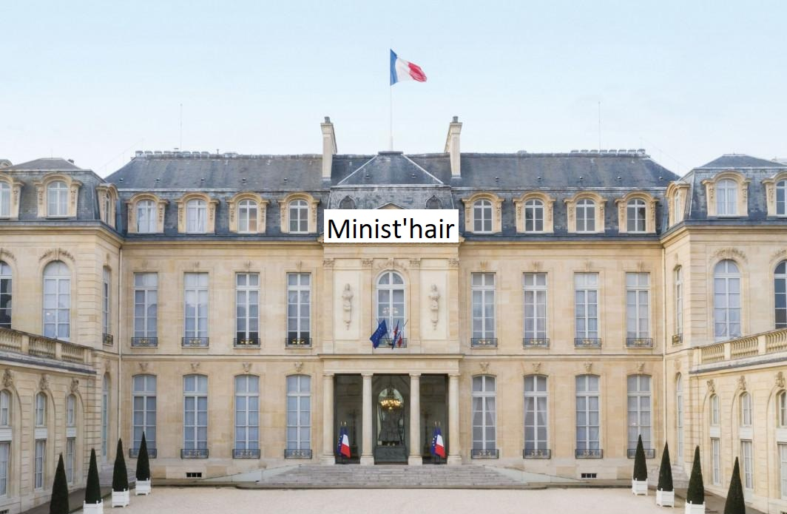
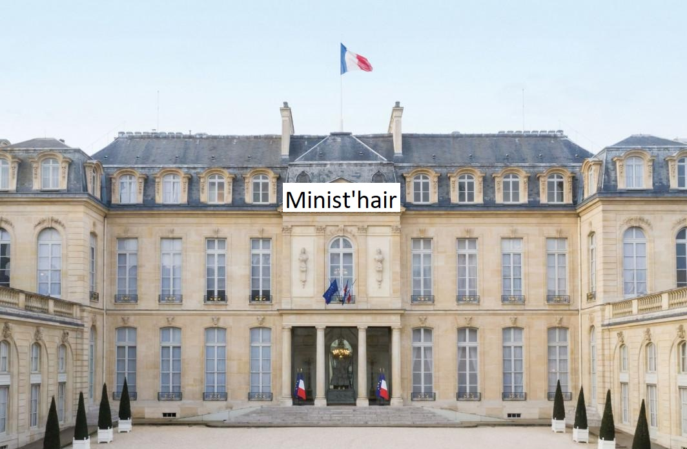

Présentation :
Bonjour, nous sommes un salon de coiffure basé à Pétaouchnok, et nous sommes capables de vous faire des coiffures de ministres.

Bonjour, nous sommes un salon de coiffure basé à Pétaouchnok, et nous sommes capables de vous faire des coiffures de ministres.
